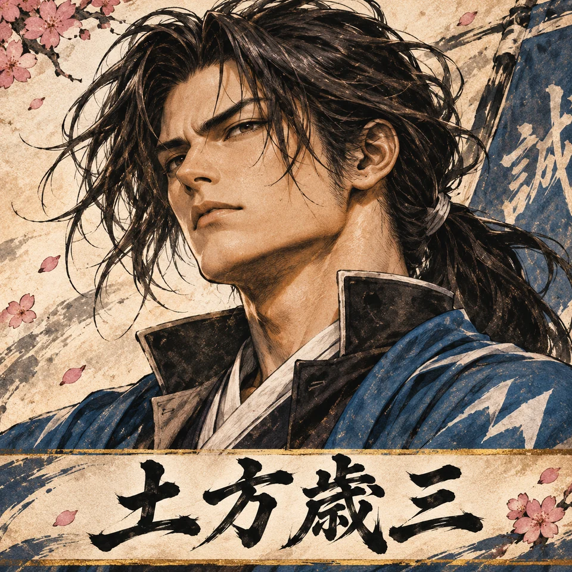
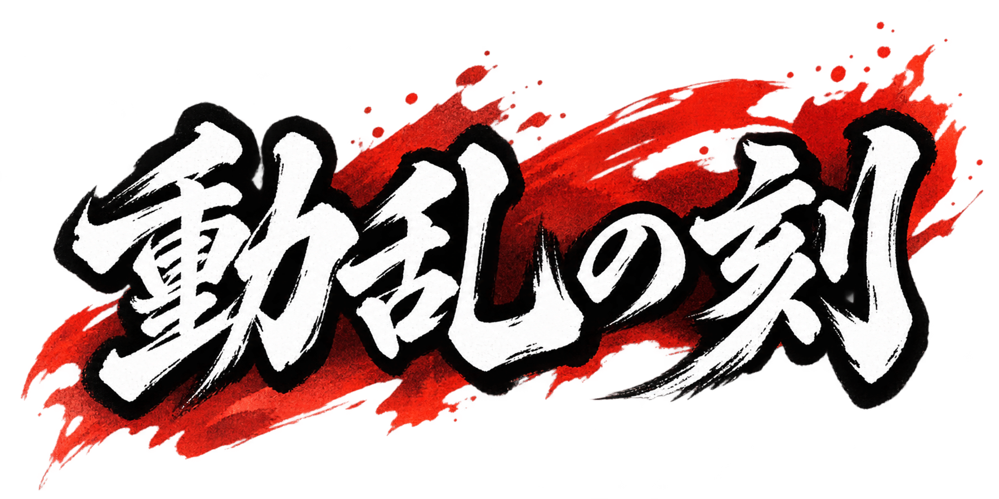

幕末動乱・盤上決戦
いざ、出陣
🔊 タイトルコールを聴く
仮のコレクションページ
›
新選組の歴史
›
将棋の遊び方
›
事件札が戦局を変える
背景：秋 ▸
AI持ち駒

誠
隊士を選択
駒をタップすると人物が表示されます
あなたの持ち駒
最初から
降参
タイトルへ戻る
将棋の遊び方
🎴 カード演出テスト
♪ 効果音テスト
効果音：ON
⚔ 掛け声：ON
新選組の声
薩長の声
♪ BGM：ON
音量
音声：未確認
BGM：ON（出陣時に再生）

勝負あり！
もう一局！
タイトルへ戻る
成るか、成らぬか
駒を成り駒に変化させますか？
成る！
成らぬ
事件札
局中に何が起こるか…
もう一度タップして閉じる
カードをタップしてめくる
事件札は双方4手番ごとに出現・タップでめくる・手番消費なし。札は有利/不利/何もなし。盤面をタップして指します。